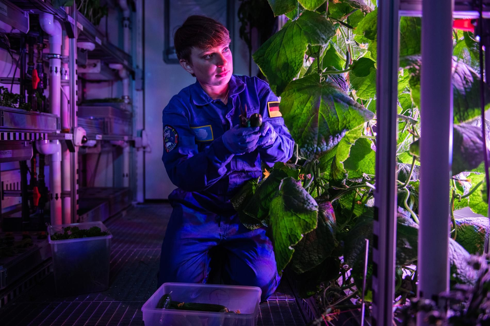
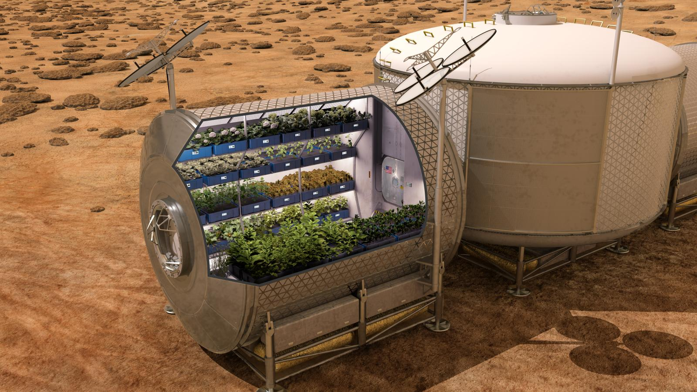
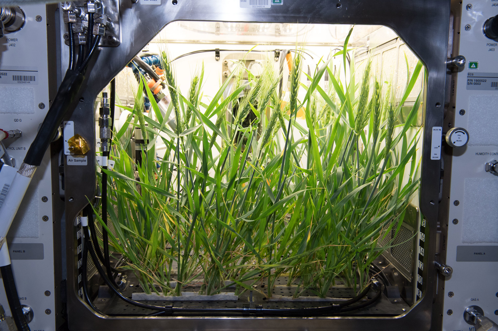

The recent announcement that astronauts aboard the International Space Station have grown their first zinnias has focused attention on just how you grow plants and vegetables in space.The answer? Grow bags.
Turns out that a high-tech variation on one of the simplest forms of soil-less, hydroponic growing is the favored method of space travelers inside the orbiting space station, a craft with a truly self-contained environment. The station has had a dedicated veggie plant growth facility on board for some time. (Media claims that the zinnias were the first blossoms in space were corrected when it was pointed out that astronauts have already achieved blossoms from peas, wheat and other seeded plants.)
Gioia Masssa, project scientist, explains how “little grow bags” she calls “plant pillows” were used to raise red Romaine lettuce inside the space station in this MOD-SPACE YouTube video. The problems that astronauts had — only three of their six plantings were successful — will be familiar to all growers: germination and water stress. The growing container, seen in the video under LED grow lights, is indeed compact.
MOD-SPACE began exploring ways to grow fresh food crops in space back in 2004, doing on-ground studies of systems that yielded lettuce, radishes and green onions at the Kennedy Space Center.
Space gardeners deal with complicating conditions that earth-bound gardeners don’t face, like how to achieve proper drainage in zero gravity. Some of the zinnia’s experienced moldy leaves, something that suggests moisture levels inside the cabin could present a serious problem.
Gardening in space brings up interesting questions like how will plants know which way is up? (Answer: they’ll grow toward the light.)
The lettuce from space, carefully harvested, was not thrown with salami and cheese between mayo-slathered slices of rye bread and served with a pickle. It was flash frozen, not eaten and brought back to earth where it is being examined for possible microbes, pathogens and other reasons it might not be fit for consumption. You might think it would be okay in the space station’s much filtered and recycled environment but ask yourself the question: would you eat anything grown in what amounts to a tiny athlete’s locker room without a shower?
On the other hand, you wouldn’t want to use fungicides or other harmful chemicals that might accumulate in that self-contained environment. Organic gardening practices should be the norm.
In addition to providing fresh food, growing vegetables in space has other benefits, both atmospheric and psychological. Plants remove harmful carbon dioxide from the air and replace it with needed oxygen. MOD-SPACE has long studied the role plants might play in removing air pollutants (PDF) inside space craft. What they’ve learned is being applied to alleviate air contamination, commonly known as poison house syndrome, in earth bound homes.
Plants have well-known stress-reducing effects, something particularly desirable for those circling the globe in confined spaces. And any gardener will tell you about the relaxation and peace that comes while they’re working, critical things to those confined in a delicate, tiny space with a handful of others.
Growing hydroponically in contained spaces under lights with controlled temperature and atmospheric conditions is something small farmers and basement growers have done for years. We’re reminded how skilled they are every time we see an array of lettuce, herbs and other greens at winter farmers markets. Or when the same markets feature hydroponically grown tomatoes about the time of year we’re transplanting tomato starts outdoors. They’ve got it down to a science.
Hydroponic growing is equal parts technology and DIY know-how. Self-contained units, maybe not as high-tech as the ones on the space station are available, but the best options come from designing your own system, choosing lights and nutrient systems that are best for your needs.
Indoor growing requires the kind of resourcefulness imagined in the film The Martian, in which astronaut Matt Damon, left behind on the red planet, survives by growing greens and potatoes in the hostile environment. Indoor growers overcome all kinds of environmental hostility — no sunlight! — when growing herbs and vegetables indoors.
On the other hand, it’s simple. With advances in growing technology, it’s easy to provide light, proper atmosphere, and balanced nutrient solution for your homegrown herbs, greens and ornamentals through the winter. What could be more satisfying and healthful than raising a few simple house plants? They’re even doing it in space.